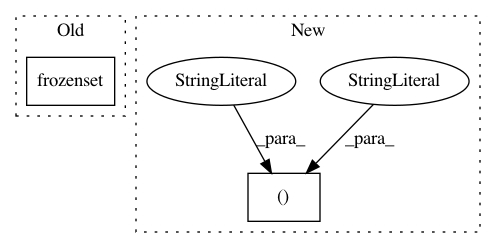

5836891ac3e6bfb68dbe45589ac87e5ac02a2cfa,networkml/featurizers/funcs/host.py,HostBase,HostBase_1,#,18
Before Change
}
// http://www.iana.org/assignments/protocol-numbers
WK_PROTOCOLS = frozenset(["eth", "ipv6", "ip", "tcp", "arp", "icmp", "gre", "esp"])
// https://www.iana.org/assignments/service-names-port-numbers/service-names-port-numbers.xml
// TODO: enumerate most common ports from survey (complete indicator matrix too expensive)
WK_PRIV_PROTO_PORTS = frozenset(
[22, 23, 25, 53, 67, 68, 69, 80, 88, 110, 123, 137, 138, 139, 143, 161, 443, 631])
After Change
class HostBase:
CALC_COL_NAMES = (
("frame.len", "frame_len"),
("frame.time_delta_displayed", "time_delta"))
CALC_COL_FUNCS = (
("max", lambda x: x.max()),
("min", lambda x: x.min()),
("count", lambda x: x.count()),
In pattern: SUPERPATTERN
Frequency: 3
Non-data size: 2
Instances
Project Name: CyberReboot/NetworkML
Commit Name: 5836891ac3e6bfb68dbe45589ac87e5ac02a2cfa
Time: 2020-03-28
Author: josh@vandervecken.com
File Name: networkml/featurizers/funcs/host.py
Class Name: HostBase
Method Name: HostBase_1
Project Name: aertslab/pySCENIC
Commit Name: 88bd7a40a6a99dabc6c505aaecdd5460282dbc3d
Time: 2018-03-07
Author: vandesande.bram@gmail.com
File Name: src/pyscenic/transform.py
Class Name:
Method Name: df2regulomes
Project Name: pantsbuild/pants
Commit Name: 4fc709a97d623b1a62133a26f08d6e8419eebd6b
Time: 2019-11-07
Author: ericarellano@me.com
File Name: tests/python/pants_test/backend/python/rules/test_pex.py
Class Name: TestResolveRequirements
Method Name: test_interpreter_constraints